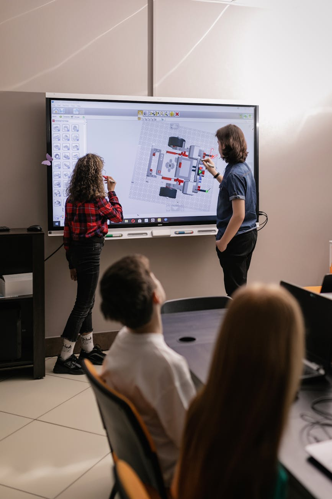
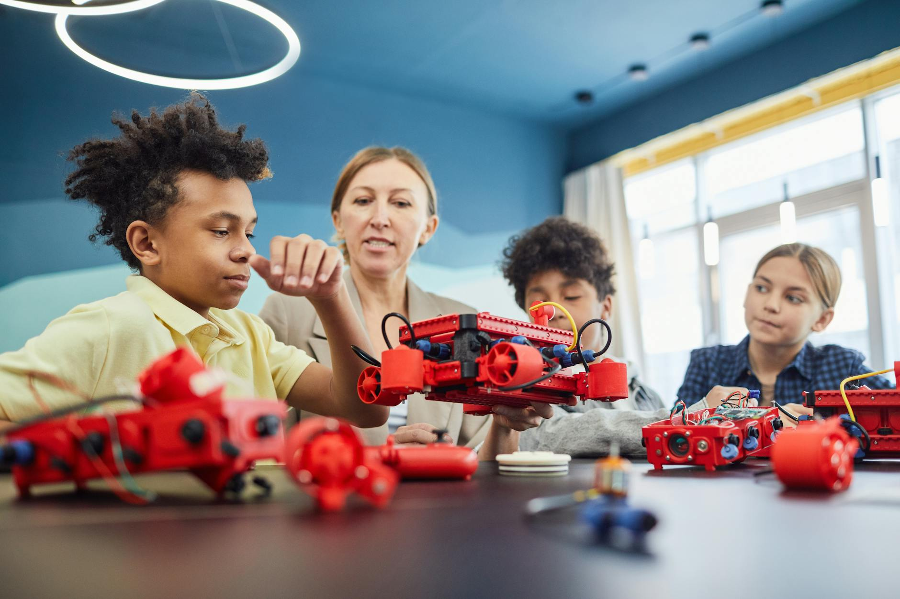

About Code 4 Hood Edu
Code 4 Hood Edu is a youth-serving 501(c)(3) nonprofit that helps young people discover their potential and build pathways to meaningful careers. Through five core programs (STEAM Education & Innovation, Youth Development & Mentoring, Workforce & Career Pathways, Safe Spaces, and Prevention & Intervention), we guide youth through one connected pathway from Enrichment to Engagement, Education, and Employment.
Founded in 2015 and rebranded in 2024, Code 4 Hood serves youth ages 10 to 24, with priority enrollment for underserved and opportunity youth, including young people who are at risk, system-involved, aging out of foster care, or re-entering their communities.
We welcome all youth from the City of Sacramento, Sacramento County, Yolo County, and San Joaquin County, with priority for youth who live or attend school in the following communities:
- Council District 4: Marina Vista
- Council District 5: Oak Park and Tahoe Park
- Council District 6: South Sacramento and the Avondale neighborhood
- Council District 8: Meadowview
Through hands-on learning, mentorship, wraparound support, and community-based experiences, we help youth build technical skills, leadership abilities, and real-world career pathways, while strengthening the digital literacy and life skills they need for long-term success.
Code 4 Hood's primary offices are located in South Oak Park within the HUD Sacramento Promise Zone at 4625 44th Street, Suites 9 and 15, Sacramento, CA 95820. Our South Sacramento location, the Code 4 Hood Youth, Family & Community Collective (YFCC), is located at 7851 35th Avenue, Sacramento, CA 95824.
Our Programs
Code 4 Hood serves young people ages 10 to 24 through one connected pathway. Youth enter through hands-on enrichment, grow through deeper engagement in middle school, and move into education and employment opportunities in high school and beyond. Five core programs carry them through every stage.
The Code 4 Hood Pathway
One connected pathway from Enrichment to Engagement, Education, and Employment.

Enrichment
Youth start with fun, hands-on experiences that spark curiosity: robotics, coding, 3D design, digital art, and maker projects. The goal is simple: help young people discover what they love and what they're capable of.
Engagement
As youth return and grow with us, programming gets deeper and more structured. Students join robotics teams and STEAM competitions, work in hands-on labs, and build relationships with mentors who help them develop confidence, leadership, and healthy decision-making.
Education
Teens explore careers, build job readiness skills, and connect their interests to real pathways in technology, trades, green energy, the creative industries, and entrepreneurship. Career exploration, guest speakers, industry-aligned training, and financial literacy prepare them for what comes next.
Employment
Young people put their skills to work through paid leadership roles, stipend programs, work-based learning, and workforce training, with support continuing up to two years after high school as they transition into college, careers, or business ownership.
Our Five Core Programs
Five connected programs support young people through every stage of their development.
STEAM Education & Innovation
Hands-on science, technology, engineering, arts, and math, from first-time maker projects to competitive robotics and cybersecurity teams. Youth build digital literacy, creativity, technical confidence, and problem-solving skills through robotics, coding and game development, digital media and design, 3D design and printing, and STEAM labs.
Youth Development & Mentoring
Caring adults and peer leaders help young people grow as whole people. Programming includes mentorship, leadership councils and peer leader roles, social-emotional learning, healthy relationships, and community-led projects that give youth a real voice in shaping their neighborhoods.
Workforce & Career Pathways
We connect learning to earning. Youth take part in career exploration, job readiness and resume building, financial literacy, industry certifications, entrepreneurship, and paid work experiences that lead to college, careers, and small business ownership.
Safe Spaces
Young people can't thrive when barriers stand in the way. Our Safe Spaces program provides wraparound support, navigation, and access to resources so youth can stay focused on learning, growing, and moving forward.
We help young people and their families connect with the services they need, whether that's food, housing, transportation, health and wellness, or school support, and we walk alongside them through the process rather than simply handing off a referral.
Every Code 4 Hood site is a welcoming, supervised space where youth feel they belong and know they have trusted adults in their corner.
Prevention & Intervention
Every young person deserves to grow up safe and healthy. Our Prevention & Intervention program works to reduce violence and substance use in our community by reaching youth early and responding when they need support most.
Prevention programming includes substance use prevention education, violence prevention, conflict resolution, mental health and emotional wellness, and youth-led prevention campaigns.
For young people facing higher risk, we provide intervention support such as intensive mentoring, conflict mediation, restorative practices, and connection to specialized services and community violence intervention partners.
Why It Works
Young people don't outgrow Code 4 Hood, they grow with it. A 10-year-old who builds their first robot can become the middle schooler competing on a robotics team, the high schooler earning a stipend as a peer leader, and the young adult launching a career. That continuity, combined with hands-on learning, mentorship, real-world experience, wraparound support, and a commitment to keeping young people safe, is what turns early curiosity into lasting opportunity.
Our Approach
At Code 4 Hood, young people don't just attend a program, they grow with us. Our approach follows one connected pathway that meets youth where they are, from age 10 through age 24, and moves them step by step from curiosity to career.
Enrichment sparks interest through fun, hands-on STEAM experiences.
Engagement deepens learning through teams, competitions, labs, and mentorship.
Education connects interests to real career pathways, skills, and training.
Employment puts those skills to work through paid experiences, workforce training, and support into college, careers, and entrepreneurship.
Our five core programs are woven through every stage of this pathway. STEAM Education & Innovation, Youth Development & Mentoring, Workforce & Career Pathways, Safe Spaces, and Prevention & Intervention work together so that young people build skills, gain support, and stay safe as they grow.
Through this approach, youth:
- Discover new interests, talents, and possibilities
- Build confidence, leadership, and healthy decision-making skills
- Develop the technical and professional skills employers are looking for
- Gain access to the support and resources needed to overcome barriers
- Strengthen their connection to caring adults, peers, and their community
The result is a holistic pathway that prepares young people for success in school, careers, and life, and helps build safer, stronger communities along the way.
Our Mission & Vision
Who we are and what our goals are.

Our Mission
Code 4 Hood empowers youth with the skills, opportunities, and support systems they need to thrive in school, careers, and life. Through hands-on STEAM learning, workforce development pathways, mentorship, and leadership experiences, we equip young people to explore innovation, build confidence, and pursue meaningful futures.
We focus on creating equitable access to opportunity—particularly for youth in underserved communities—by providing engaging programs that connect education, real-world skills, and community impact.
Our work helps young people discover their potential while preparing them to become problem-solvers, entrepreneurs, and leaders in the industries shaping tomorrow.
Our Vision
We envision communities where every young person—regardless of background—has access to the tools, mentorship, and experiences needed to build a successful future.
Code 4 Hood strives to cultivate a generation of innovators, creators, and leaders who are equipped to shape technology, strengthen their communities, and drive positive change in the world.
Core Values
The principles that guide our work and impact.
Access & Equity
Opportunity should not be determined by zip code. We are committed to expanding access to high-quality learning experiences, career pathways, and mentorship for youth who have historically been underrepresented in STEAM and emerging industries.
Hands-On Learning
We believe youth learn best by doing. Our programs emphasize project-based learning, real-world problem solving, and interactive experiences that spark curiosity and creativity.
Youth Voice & Leadership
Young people are not just participants—they are leaders. We empower youth to take ownership of ideas, lead initiatives, and contribute meaningfully to their communities.
Innovation & Exploration
Curiosity drives progress. We encourage experimentation, creativity, and forward-thinking solutions that prepare youth to thrive in a rapidly evolving world.
Community & Collaboration
Strong communities create stronger opportunities. We partner with schools, industry leaders, nonprofits, and families to build a supportive ecosystem around youth success.
Pathways to the Future
Our programs are designed to open doors—from early STEAM exposure to workforce development and entrepreneurship—helping youth discover and pursue meaningful career pathways.
Visit Our Gallery
Check out some of our events, some of our students and some of our projects!